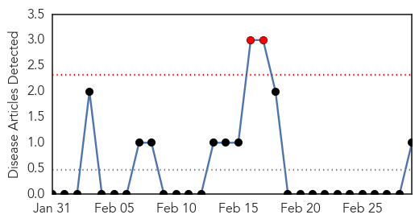
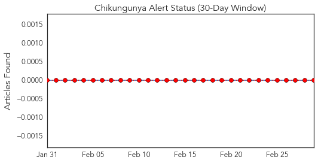
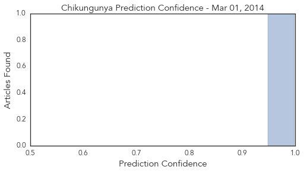
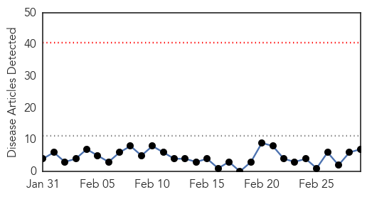
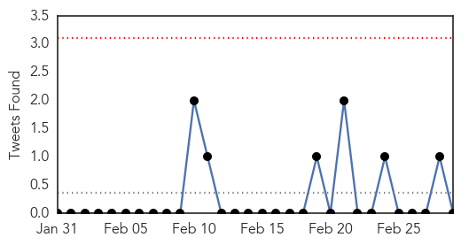
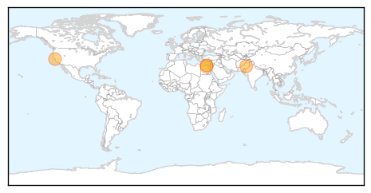

Chikungunya
30-Day Web Trend
2 alerts, 0 warnings

30-Day Twitter Trend
0 alerts, 0 warnings

Article Locations

Article Confidences
Top Articles:
Top Tweets:
-
No tweets found for Mar 01, 2014
Swine Flu
30-Day Web Trend
0 alerts, 0 warnings

30-Day Twitter Trend
0 alerts, 0 warnings

Article Locations
Article Confidences
Top Articles:
- 0.999
- No deaths from MERS virus: Egypt health ministry
- 0.998
- Nishtar Hospital runs out of Swine flu kits
- 0.995
- Farsnews
- 0.995
- First Egyptian dies from MERS in Aswan: Al-Ahram
- 0.982
- In our opinion: Preparing for flu virus
- 0.706
- People demand early steps to control disease
- 0.635
- Palo Alto man dies from swine flu
Top Tweets:
-
No tweets found for Mar 01, 2014